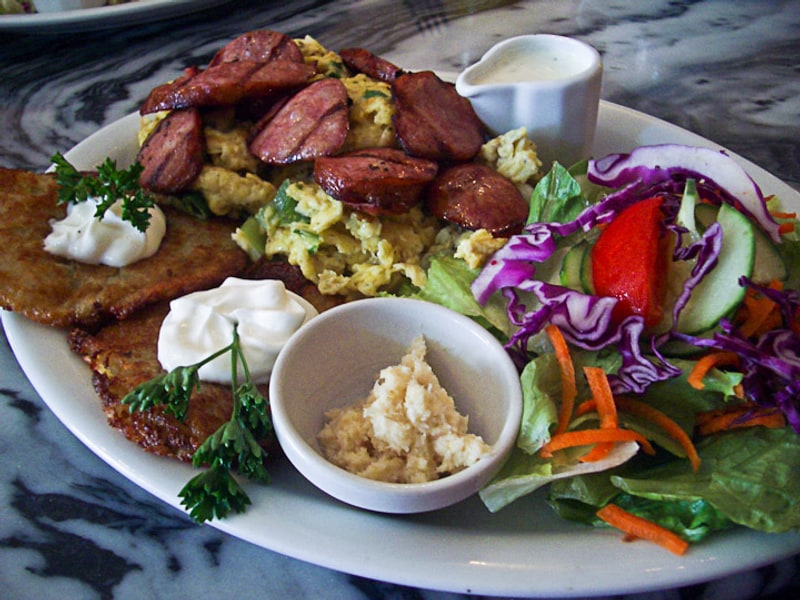

Polskie obiadki
Placki ziemniaczane
Placki ziemniaczane: 4 g białka, 195 kcal, 24 g węglowodanów i 10 g tłuszczu na 100 g. Kategoria: Polskie obiadki.
Kalorie195 kcalna 100 g
Białko / proteiny4 g
Węglowodany24 g
Tłuszcz10 g
Cena (szac.)~1,56 złza 100 g
Ceny zaktualizowano: maj 2026 (szacunek — ceny w popularnych supermarketach)
Porcja: sztuka (80g)
| Kalorie | 156 kcal |
|---|---|
| Białko | 3.2 g |
| Węglowodany | 19.2 g |
| Tłuszcz | 8 g |
| Cena (szac.) | ~1,25 zł |
Szczegółowe składniki odżywcze na 100 g
| Wartość energetyczna (kalorie) | 195 kcal |
|---|---|
| Białko (proteiny) | 4 g |
| Węglowodany | 24 g |
| Tłuszcz | 10 g |
| Tłuszcze nasycone | 2 g |
| Tłuszcze nienasycone | 8 g |
| Witaminy i minerały | Żelazo, Tiamina (B1), Potas |
| Współczynnik kcal / 1 g białka | 48.8 |
| Cena produktu (szac. za 100 g) | ~1,56 zł |
| Cena za 100 g białka (szac.) | ~39,06 zł |